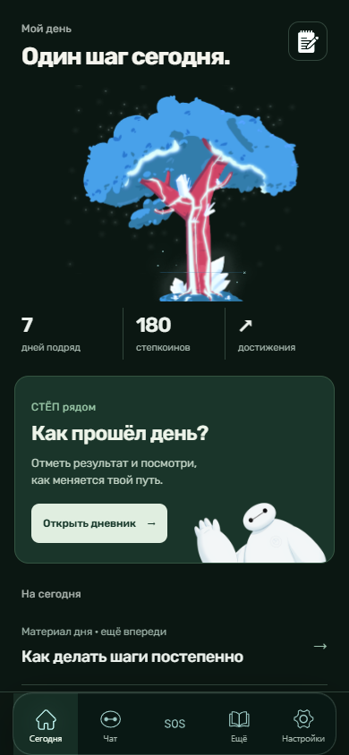
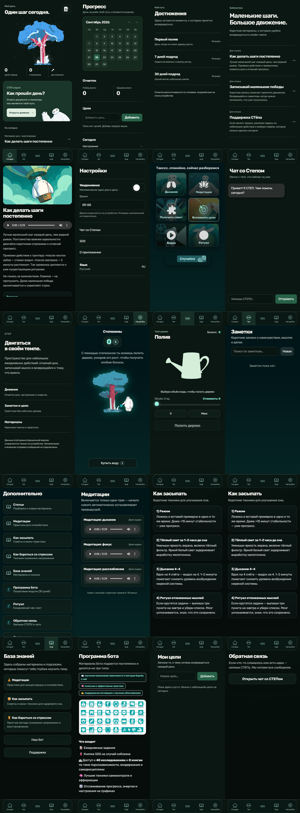
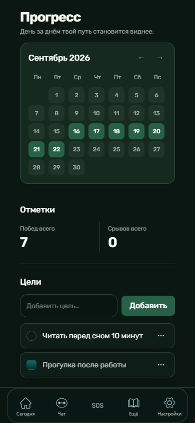
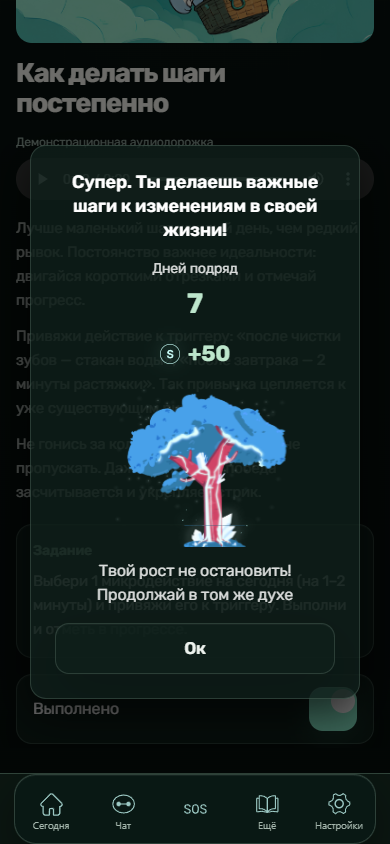
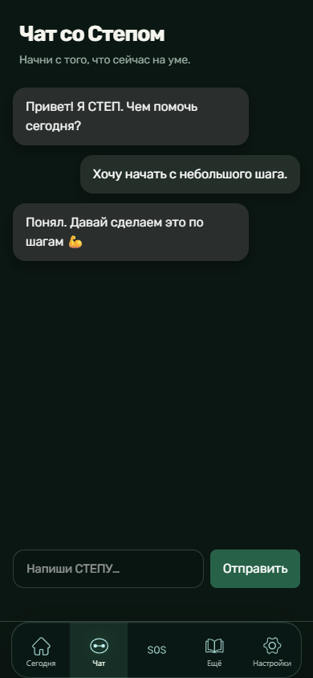

Original
React / TypeScript Mini App, localStorage, Telegram adapter, дерево, заметки, цели, материалы и локальные игровые состояния.

Дерево растёт вместе с небольшими действиями пользователя. Локальная demo-копия, реальные экраны продукта.
Walkthrough снят после V2-полировки: заметка и цель сохраняются, статья отмечается, полив меняет баланс и журнал, достижение реагирует на действие.
Мобильный продукт остаётся мобильным и на широком экране.
Не только home и cover. Каждый подключённый маршрут просмотрен на 390, 768 и 1440; незавершённые функции названы честно.

Календарь, журнал и дерево формируют собственный язык продукта. Контейнеры используются там, где пользователь действительно взаимодействует с состоянием.



React / TypeScript Mini App, localStorage, Telegram adapter, дерево, заметки, цели, материалы и локальные игровые состояния.
Сетка, типографика, navigation, composer, состояния, честные тексты незавершённых функций и desktop-окружение.
История, заметки, цели и монеты вымышлены. Чат отвечает сохранённым шаблоном. Backend и push-уведомления не заявляются.